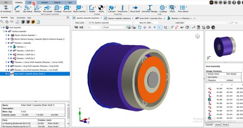

인휠 모터용 유성기어 최적설계 — 공진을 피하면서 부피 최소화
- EMRAX 228 모터 4개로 아이오닉 5급 휠 토크를 내는 조건에서, ISO 6336/AGMA 강도 기준 아래 모듈·잇수·치폭·축경을 설계변수로 잡았습니다.
- 370만 개가 넘는 조합을 걸러 98,530개의 가능한 기어 세트를 얻었습니다. 전부 모달 해석을 돌리는 대신 ANSYS 결과로 GPR 대리모델을 학습시키고, 학습에 쓰지 않은 형상으로 확인했습니다(평균 상대오차 1.91%).
- 최종안(모듈 2.68, 60T/12T, 치폭 59 mm, 3.94×10⁶ mm³)을 ANSYS와 ROMAX로 다시 확인했습니다. SH 3.24, SF 3.18, 맞물림 주파수 ±10% 안에 공진 없음.
